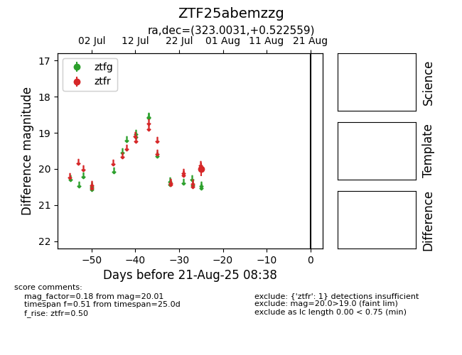

Target ZTF25abemzzg at 2025-08-21 08:38, see:
FINK: fink-portal.org/ZTF25abemzzg
Lasair: lasair-ztf.lsst.ac.uk/objects/ZTF25abemzzg
ALeRCE: alerce.online/object/ZTF25abemzzg
alt names
ZTF25abemzzg (ztf,alerce)
coordinates:
equatorial (ra, dec) = (323.0031,+0.52256)
galactic (l, b) = (54.4952,-34.72222)
photometry
last ztfr=20.01
1 ztfr detections
